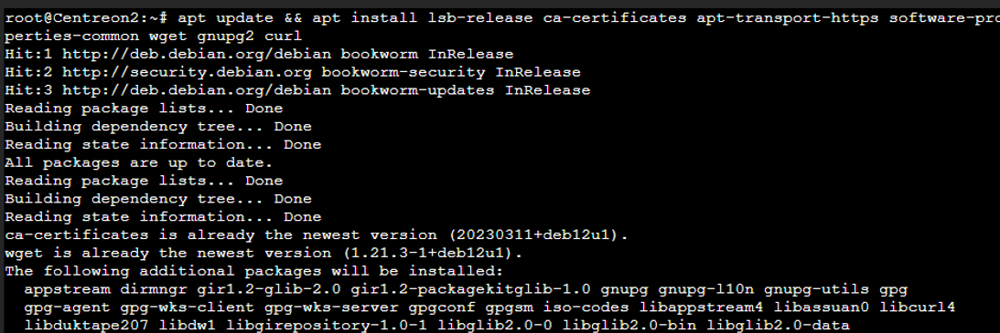
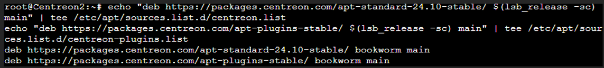
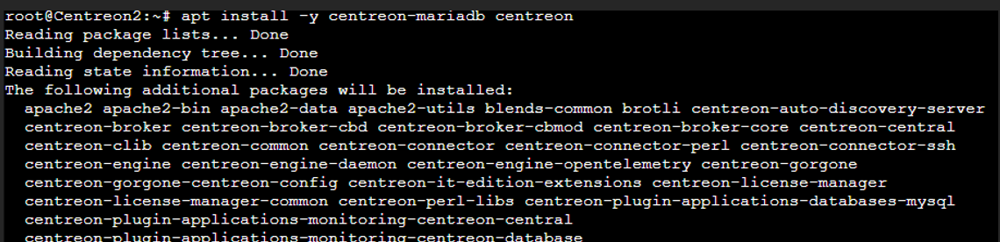
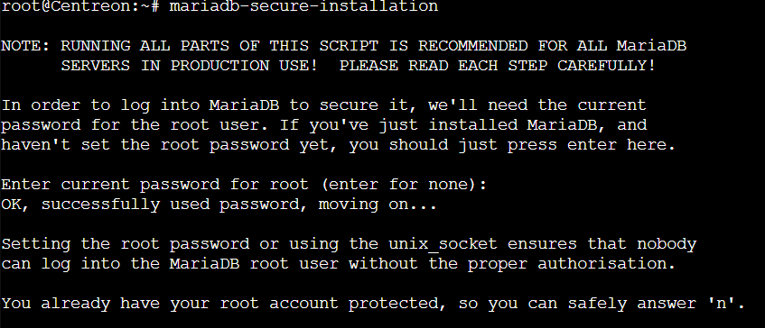
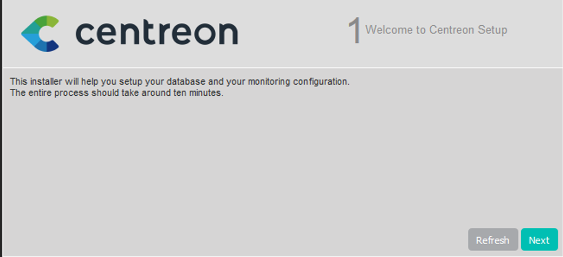
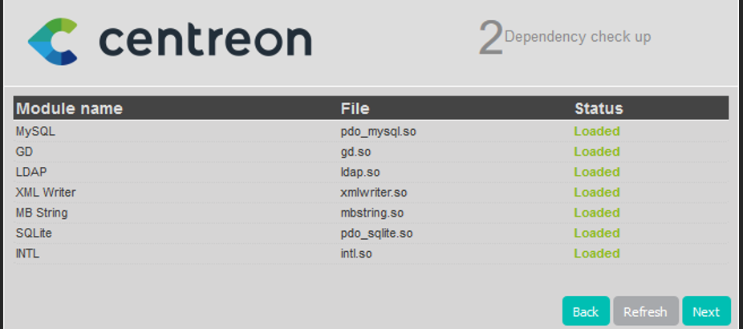
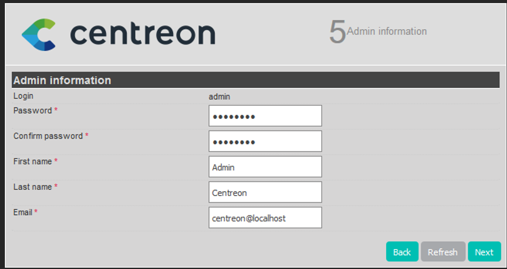
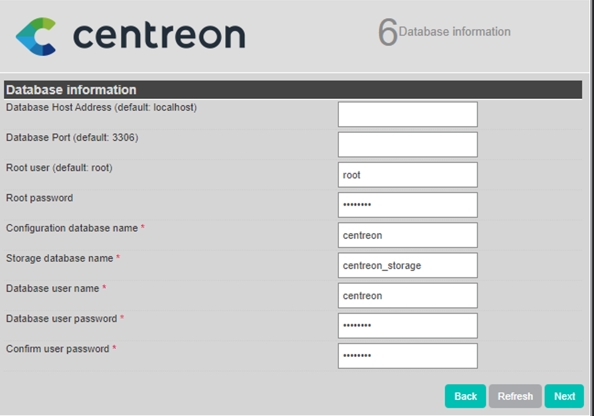
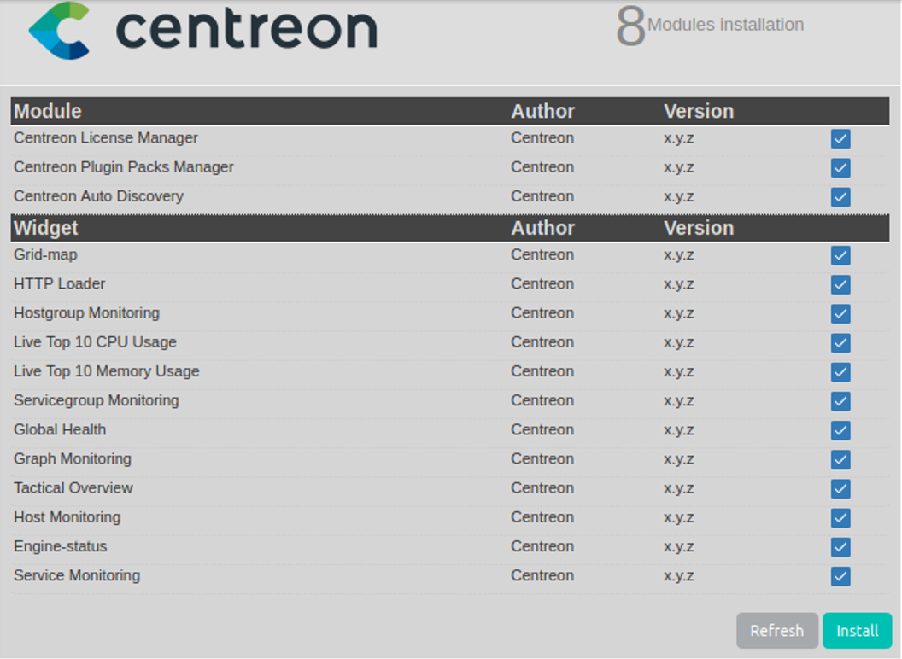
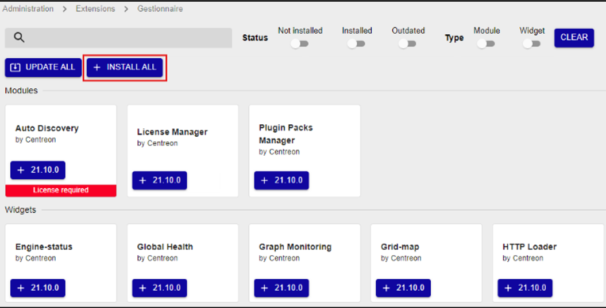

Projet : Monitoring proactif de l'infrastructure CUB
Équipement : Serveur Centreon (Debian 12)
Date : année 2025-2026
L'installation a été réalisée de bout en bout sur une machine virtuelle fonctionnant sous Debian 12 en ligne de commande.
Étape 1 : Pré-installation et dépendances
Installation des paquets requis et ajout du dépôt MariaDB 10.11 :

Ajout des dépôts Centreon Standard et Plugins, et importation de la clé GPG :

Étape 2 : Installation de Centreon et MariaDB
Installation du serveur Centreon et de la base de données locale :

Sécurisation obligatoire du compte root de la base de données :

Pour finaliser cette partie système, les services (`apache2`, `mariadb`, `php-fpm`, etc.) ont été activés pour se lancer automatiquement au démarrage.
Une fois le serveur web Apache démarré, la configuration se poursuit via l'interface graphique en accédant à `http://
Vérification et Moteur de supervision


Comptes et Base de données


Finalisation et Modules

La communication entre le serveur Centreon et les équipements surveillés se fait via le protocole SNMP.
ajout d'extension

Vue globale des hôtes (Hosts Status) - Tous les équipements sont surveillés